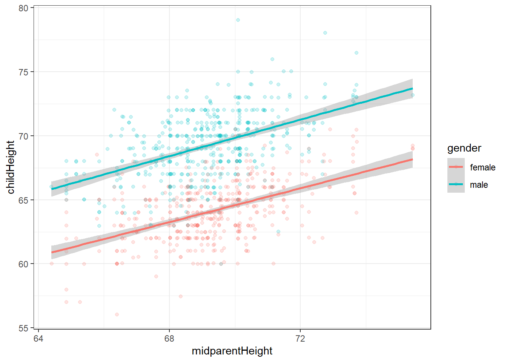

11 Hypothesis tests about more than one parameter
Up to this point, we can estimate linear regressions with as many right-hand-side variables as we like, and can transform our parameters in some useful ways. However, when it comes to hypothesis testing, we can only test the value of one parameter at a time. This is, indeed, very useful, but sometimes we need to make a statement about a group of parameters.
Take, for example, the instructor evaluations dataset
library(tidyverse)
library(lmtest)
library(sandwich)
library(stargazer)
d<-read.csv("https://vincentarelbundock.github.io/Rdatasets/csv/AER/TeachingRatings.csv")
d %>% sample_n(10) %>% knitr::kable()| rownames | minority | age | gender | credits | beauty | eval | division | native | tenure | students | allstudents | prof |
|---|---|---|---|---|---|---|---|---|---|---|---|---|
| 155 | no | 42 | male | more | 0.2168924 | 3.8 | upper | yes | yes | 18 | 30 | 13 |
| 63 | no | 52 | female | more | 0.7735240 | 3.7 | upper | yes | yes | 64 | 88 | 63 |
| 407 | no | 51 | female | more | 0.9889485 | 4.6 | upper | yes | yes | 17 | 20 | 80 |
| 91 | no | 52 | female | more | -0.0018324 | 4.0 | lower | yes | yes | 61 | 111 | 91 |
| 385 | no | 52 | male | more | 0.7566829 | 4.2 | upper | yes | yes | 27 | 45 | 72 |
| 26 | no | 58 | male | more | -0.3218485 | 4.2 | upper | yes | yes | 84 | 159 | 26 |
| 390 | no | 38 | male | more | -0.5665014 | 4.1 | lower | yes | yes | 66 | 84 | 74 |
| 205 | no | 64 | male | more | -0.1111221 | 4.6 | upper | yes | yes | 22 | 47 | 24 |
| 267 | no | 60 | male | more | -0.3953965 | 4.6 | upper | yes | yes | 8 | 12 | 39 |
| 281 | no | 39 | female | more | 1.9700230 | 3.6 | lower | yes | no | 27 | 28 | 43 |
While it may be interesting to know whether and how any of these variables “affect” evaluations, one might instead be interested in testing whether a group of these variables affects evaluations. For this example, let’s suppose that we want to test for discrimination based on any intrinsic, unchangeable characteristic of the instructor. Specifically:
agegenderbeautynative(whether the instructor is a native English speaker)
As a first pass, we estimate the following regression
reg<-list()
reg[[1]]<-d %>% lm(formula=log(eval)~log(age)+as.factor(gender)+beauty+as.factor(native)+as.factor(credits)+as.factor(tenure)+log(students)+log(allstudents))
stargazer(reg,type="html")| Dependent variable: | |
| log(eval) | |
| log(age) | -0.030 |
| (0.034) | |
| as.factor(gender)male | 0.056*** |
| (0.013) | |
| beauty | 0.036*** |
| (0.009) | |
| as.factor(native)yes | 0.081*** |
| (0.027) | |
| as.factor(credits)single | 0.117*** |
| (0.029) | |
| as.factor(tenure)yes | -0.018 |
| (0.017) | |
| log(students) | 0.081*** |
| (0.026) | |
| log(allstudents) | -0.088*** |
| (0.024) | |
| Constant | 1.442*** |
| (0.139) | |
| Observations | 463 |
| R2 | 0.163 |
| Adjusted R2 | 0.149 |
| Residual Std. Error | 0.136 (df = 454) |
| F Statistic | 11.088*** (df = 8; 454) |
| Note: | p<0.1; p<0.05; p<0.01 |
Qualitatively, our hypothesis of “no discrimination” would be roughly consistent with our estimates if all of the first four coefficients (log(age), male, beauty, and native) were close to zero. Individually, the stars in this regression output tell us that all of these coefficients except for age are statistically significant, and so it looks like the data are not consistent with our hypothesis. But this is not the formal hypothesis test that all of these coefficients are zero. The stars are in fact reporting the test for each coefficient separately, not the joint test that all of these coefficients are zero.
11.1 The restricted model
Qualitatively, what we want to do is to compare this unrestricted model, with a restricted model that imposes the null hypothesis. For this example to impose this restriction, all we need to do is to omit the variables of interest from the right-hand side of the regression. That is, we need to estimate the following model, which I show again alongside the first model for comparison:
reg[[2]]<-d %>% lm(formula=log(eval)~as.factor(credits)+as.factor(tenure)+log(students)+log(allstudents))
stargazer(reg,type="html")| Dependent variable: | ||
| log(eval) | ||
| (1) | (2) | |
| log(age) | -0.030 | |
| (0.034) | ||
| as.factor(gender)male | 0.056*** | |
| (0.013) | ||
| beauty | 0.036*** | |
| (0.009) | ||
| as.factor(native)yes | 0.081*** | |
| (0.027) | ||
| as.factor(credits)single | 0.117*** | 0.115*** |
| (0.029) | (0.030) | |
| as.factor(tenure)yes | -0.018 | -0.021 |
| (0.017) | (0.017) | |
| log(students) | 0.081*** | 0.100*** |
| (0.026) | (0.027) | |
| log(allstudents) | -0.088*** | -0.098*** |
| (0.024) | (0.025) | |
| Constant | 1.442*** | 1.409*** |
| (0.139) | (0.031) | |
| Observations | 463 | 463 |
| R2 | 0.163 | 0.083 |
| Adjusted R2 | 0.149 | 0.075 |
| Residual Std. Error | 0.136 (df = 454) | 0.142 (df = 458) |
| F Statistic | 11.088*** (df = 8; 454) | 10.317*** (df = 4; 458) |
| Note: | p<0.1; p<0.05; p<0.01 | |
Note here that I have left out the four variables of interest. Another way of thinking of this is that I have forced column (2) to set these four coefficients equal to zero, which is exactly what the null hypothesis is:
\[ H_0:\ \beta_\text{age}=\beta_\text{male}=\beta_\text{beauty}=\beta_\text{native}=0 \]
But we need to be careful about the alternative. As usual, our alternative can be summarized by “not \(H_0\)”, but what exactly is this? Well in this case, \(H_0\) would not by true if at least one of the above coefficients are not zero:
\[ \begin{aligned} H_A:\ \text{at least one of:}\ \beta_\text{age}&\neq 0\\ \beta_\text{male}&\neq 0\\ \beta_\text{beauty}&\neq 0\\ \beta_\text{native}&\neq 0 \end{aligned} \]
Therefore, if we reject our null, we cannot conclude that there is a specific kind (e.g. gender) of discrimination, just that there is some kind of discrimination.
11.2 A test using \(R^2\) that you probably shouldn’t use
So now that we have a null and alternative hypothesis, we need a test statistic to measure how inconsistent our data are with the null hypothesis. One way we could measure this is to compare the \(R^2\)s of the restricted (column 2) and unrestricted (column 1) models. While the unrestricted model must always have a larger \(R^2\), if the restricted model’s \(R^2\) was close to this, then adding in these four extra variables doesn’t buy us much in terms of explanatory power. On the other hand, if the unrestricted model’s \(R^2\) is substantially larger, then it must be that the additional parameters we added into this model are explaining a lot of extra variation in our left-hand side variable, and so the null is probably not true. Therefore, comparing the differences in \(R^2\)s is a good starting pint for a test statistic:
\[ R^2_\text{unrestricted}-R^2_\text{restricted} \] Note that since this quantity must be positive, we will reject the null iff this quantity is sufficiently large.
As with when we were testing hypotheses about single parameters, it is useful here to scale our test statistic so that we can look up critical values in a table, or ask R to compute them for us. Therefore, the following test statistic is what we will actually use:
\[ \begin{aligned} F&=\frac{\left(R^2_\text{unrestricted}-R^2_\text{restricted}\right)/q}{(1-R^2_\text{unrestricted})/(N-k)} \end{aligned} \]
where:
- \(R^2_\text{unrestricted}\) is the \(R^2\) of the unrestricted model (0.163 in this case)
- \(R^2_\text{restricted}\) is the \(R^2\) of the restricted model (0.083 in this case)
- \(N\) is the sample size (463 in this case)
- \(k\) is the number of parameters in the unrestricted model, including the constant (9 in this case)
- \(q\) is the number of parameter restrictions that the null hypothesis imposes (4 in this case)
Therefore the value of our test statistic is:
## [1] 10.84827This test statistic follows an \(F\)-distribution with parameters \(q\) and \(N-k\), which is denoted \(F_{q,N-k}\), so we can work out the critical value for this test at the 5% level of significance in \(R\) by computing the inverse cdf at 0.95:
## [1] 2.391582So since our test statistic is greater than the critical value, we reject the null. From here, we can conclude that there is some kind of discrimination going on, based on at least one of age, gender, beauty, and native English speaking.
We could also work out the \(p\)-value by evaluating the \(F\)-distribution’s cdf:
## [1] 2.084397e-0811.3 A more robust test
But hopefully you are remembering here that \(R^2\) is only a function of your coefficient estimates, not your standard errors! So if you do this test, all of the hard work that you put into thinking about how to get your standard errors right (or at least less wrong) goes out the window. You will probably at least be estimating heteroskedasticity-robust standard errors, and \(R^2\) doesn’t even respect this!
Fortunately for us, there are a few ways that allow us to carry our standard errors through these calculations. The null and alternative are exactly the same as above, but it takes an input your choice of standard errors.
The Wald test statistic requires some matrix algebra to calculate by hand, so I won’t go into details here. All I will say is that a Wald test statistic for one coefficient is exactly the same a the \(t\)-statistic for that coeffieicnt squared. As with the \(R^2\) test above, therefore, larger test statistics are evidence against the null.
Fortunately for us, R will do this test for us, all we have to do is tell it the restricted and unrestricted models (which we have already estimated above), and if we want to use a particular kind of standrad errors, instructions on how to calculate them. For the instructor evaluations dataset, it seems reasonable to cluster standard errors based on the instructor id, called prof. Here’s how we do the test:
waldtest(reg[[2]], # Restricted model
reg[[1]], # Unrestricted model
vcov=vcovCL(reg[[1]],cluster = ~ prof) # standard errors.
)## Wald test
##
## Model 1: log(eval) ~ as.factor(credits) + as.factor(tenure) + log(students) +
## log(allstudents)
## Model 2: log(eval) ~ log(age) + as.factor(gender) + beauty + as.factor(native) +
## as.factor(credits) + as.factor(tenure) + log(students) +
## log(allstudents)
## Res.Df Df F Pr(>F)
## 1 458
## 2 454 4 4.7913 0.0008554 ***
## ---
## Signif. codes: 0 '***' 0.001 '**' 0.01 '*' 0.05 '.' 0.1 ' ' 1Note that while we still reject the null, the \(p\)-value is a few orders of magnitude larger. This is because our clustered standard errors understand the dependence in observations coming from the same instructor, and are larger because of it.
11.4 Another example
Consider the Galton heights dataset (documentation availble here):
D<-read.csv("https://vincentarelbundock.github.io/Rdatasets/csv/HistData/GaltonFamilies.csv")
D %>% sample_n(10) %>% knitr::kable()| rownames | family | father | mother | midparentHeight | children | childNum | gender | childHeight |
|---|---|---|---|---|---|---|---|---|
| 194 | 052 | 71.0 | 63.5 | 69.79 | 5 | 1 | male | 71.0 |
| 796 | 173 | 66.0 | 67.0 | 69.18 | 9 | 7 | female | 62.0 |
| 578 | 130 | 68.5 | 66.5 | 70.16 | 11 | 3 | male | 69.0 |
| 717 | 158 | 68.0 | 59.0 | 65.86 | 10 | 10 | female | 61.0 |
| 113 | 031 | 72.5 | 62.0 | 69.73 | 6 | 3 | male | 70.0 |
| 151 | 040 | 71.0 | 66.0 | 71.14 | 5 | 3 | male | 71.0 |
| 99 | 027 | 72.0 | 63.0 | 70.02 | 3 | 2 | male | 67.0 |
| 523 | 119 | 69.0 | 62.0 | 67.98 | 5 | 3 | male | 71.0 |
| 85 | 023 | 72.0 | 65.0 | 71.10 | 7 | 3 | male | 69.5 |
| 72 | 020 | 72.7 | 69.0 | 73.61 | 8 | 4 | female | 70.0 |
(
ggplot(D,aes(x=midparentHeight,y=childHeight,color=gender))
+geom_jitter(alpha=0.2)
+geom_smooth(formula="y~x",method="lm")
+theme_bw()
)
Now that we can test multiple restrictions at the same time, and we know how to include variables on the right-hand side to allow for more flexible relationships, there are many more questions that we can answer using this dataset. Below we will a few of them. Note that some of these we could have answered without our understanding from this chapter, but I include them here to show how they relate to hypothesis tests on just one parameter.
Note also that I have framed all of these statements as null hypotheses. That is, they all state that there should be no effect. Therefore we should be looking for an unrestricted model that allows for these statements to be not true, and a restriction on this model that imposes the null hypothesis.
11.4.1 The height of a child does not depend on whether the child is male of female
reg1<-D %>% lm(formula=childHeight~midparentHeight+as.factor(gender))
reg2<-D %>% lm(formula=childHeight~midparentHeight)
stargazer(reg1,reg2,type="html")| Dependent variable: | ||
| childHeight | ||
| (1) | (2) | |
| midparentHeight | 0.687*** | 0.637*** |
| (0.039) | (0.062) | |
| as.factor(gender)male | 5.215*** | |
| (0.142) | ||
| Constant | 16.514*** | 22.636*** |
| (2.734) | (4.265) | |
| Observations | 934 | 934 |
| R2 | 0.633 | 0.103 |
| Adjusted R2 | 0.632 | 0.102 |
| Residual Std. Error | 2.170 (df = 931) | 3.392 (df = 932) |
| F Statistic | 803.636*** (df = 2; 931) | 107.029*** (df = 1; 932) |
| Note: | p<0.1; p<0.05; p<0.01 | |
waldtest(reg2, # Restricted model
reg1, # Unrestricted model
vcov=vcovCL(reg1,cluster = ~ family) # standard errors.
)## Wald test
##
## Model 1: childHeight ~ midparentHeight
## Model 2: childHeight ~ midparentHeight + as.factor(gender)
## Res.Df Df F Pr(>F)
## 1 932
## 2 931 1 1158.6 < 2.2e-16 ***
## ---
## Signif. codes: 0 '***' 0.001 '**' 0.01 '*' 0.05 '.' 0.1 ' ' 111.4.2 The height of a child does not depend on the height of their parents
reg1<-D %>% lm(formula=childHeight~mother+father+as.factor(gender))
reg2<-D %>% lm(formula=childHeight~as.factor(gender))
stargazer(reg1,reg2,type="html")| Dependent variable: | ||
| childHeight | ||
| (1) | (2) | |
| mother | 0.318*** | |
| (0.031) | ||
| father | 0.393*** | |
| (0.029) | ||
| as.factor(gender)male | 5.215*** | 5.130*** |
| (0.142) | (0.164) | |
| Constant | 16.521*** | 64.104*** |
| (2.727) | (0.117) | |
| Observations | 934 | 934 |
| R2 | 0.635 | 0.514 |
| Adjusted R2 | 0.634 | 0.513 |
| Residual Std. Error | 2.165 (df = 930) | 2.497 (df = 932) |
| F Statistic | 540.262*** (df = 3; 930) | 984.402*** (df = 1; 932) |
| Note: | p<0.1; p<0.05; p<0.01 | |
waldtest(reg2, # Restricted model
reg1, # Unrestricted model
vcov=vcovCL(reg1,cluster = ~ family) # standard errors.
)## Wald test
##
## Model 1: childHeight ~ as.factor(gender)
## Model 2: childHeight ~ mother + father + as.factor(gender)
## Res.Df Df F Pr(>F)
## 1 932
## 2 930 2 94.935 < 2.2e-16 ***
## ---
## Signif. codes: 0 '***' 0.001 '**' 0.01 '*' 0.05 '.' 0.1 ' ' 111.4.3 The effect of mother height on child height is the same as the effect of father height on child height
Unrestricted model:
\[ \begin{aligned} Y&=\beta_0+\beta_1 m+\beta_2 f+\beta_3g+\epsilon\\ H_0:&\ \beta_1=\beta_2 \end{aligned} \] Let’s say that this effect is equal to \(\gamma\). The restricted model is:
\[ \begin{aligned} Y&=\beta_0+\gamma m+\gamma f+\beta_3g+\epsilon\\ &=\beta_0+\gamma (m+f)+\beta_3g+\epsilon \end{aligned} \]
D <-D %>% mutate(motherPlusFather=mother+father)
reg1<-D %>% lm(formula=childHeight~motherPlusFather+father+as.factor(gender))
reg2<-D %>% lm(formula=childHeight~motherPlusFather+as.factor(gender))
stargazer(reg1,reg2,type="html") | Dependent variable: | ||
| childHeight | ||
| (1) | (2) | |
| motherPlusFather | 0.318*** | 0.358*** |
| (0.031) | (0.020) | |
| father | 0.075* | |
| (0.043) | ||
| as.factor(gender)male | 5.215*** | 5.215*** |
| (0.142) | (0.142) | |
| Constant | 16.521*** | 16.345*** |
| (2.727) | (2.728) | |
| Observations | 934 | 934 |
| R2 | 0.635 | 0.634 |
| Adjusted R2 | 0.634 | 0.633 |
| Residual Std. Error | 2.165 (df = 930) | 2.167 (df = 931) |
| F Statistic | 540.262*** (df = 3; 930) | 807.166*** (df = 2; 931) |
| Note: | p<0.1; p<0.05; p<0.01 | |
waldtest(reg2, # Restricted model
reg1, # Unrestricted model
vcov=vcovCL(reg1,cluster = ~ family) # standard errors.
)## Wald test
##
## Model 1: childHeight ~ motherPlusFather + as.factor(gender)
## Model 2: childHeight ~ motherPlusFather + father + as.factor(gender)
## Res.Df Df F Pr(>F)
## 1 931
## 2 930 1 1.6776 0.195611.4.4 The effect of parent height on male children’s height is the same as the effect of parent height on female children’s height
reg1<-D %>% lm(formula=childHeight~mother+father+as.factor(gender) +mother*as.factor(gender)+father*as.factor(gender))
reg2<-D %>% lm(formula=childHeight~mother+father+as.factor(gender))
stargazer(reg1,reg2,type="html")| Dependent variable: | ||
| childHeight | ||
| (1) | (2) | |
| mother | 0.303*** | 0.318*** |
| (0.045) | (0.031) | |
| father | 0.373*** | 0.393*** |
| (0.039) | (0.029) | |
| as.factor(gender)male | 0.479 | 5.215*** |
| (5.470) | (0.142) | |
| mother:as.factor(gender)male | 0.025 | |
| (0.062) | ||
| father:as.factor(gender)male | 0.045 | |
| (0.058) | ||
| Constant | 18.834*** | 16.521*** |
| (3.871) | (2.727) | |
| Observations | 934 | 934 |
| R2 | 0.636 | 0.635 |
| Adjusted R2 | 0.634 | 0.634 |
| Residual Std. Error | 2.166 (df = 928) | 2.165 (df = 930) |
| F Statistic | 323.907*** (df = 5; 928) | 540.262*** (df = 3; 930) |
| Note: | p<0.1; p<0.05; p<0.01 | |
waldtest(reg2, # Restricted model
reg1, # Unrestricted model
vcov=vcovCL(reg1,cluster = ~ family) # standard errors.
) ## Wald test
##
## Model 1: childHeight ~ mother + father + as.factor(gender)
## Model 2: childHeight ~ mother + father + as.factor(gender) + mother *
## as.factor(gender) + father * as.factor(gender)
## Res.Df Df F Pr(>F)
## 1 930
## 2 928 2 0.3891 0.677811.4.5 The effect of parent height on child height is linear
reg1<-D %>% mutate(m2=mother^2,f2=father^2) %>% lm(formula=childHeight~mother+father+as.factor(gender)+m2+f2)
reg2<-D %>% lm(formula=childHeight~mother+father+as.factor(gender))
stargazer(reg1,reg2,type="html")| Dependent variable: | ||
| childHeight | ||
| (1) | (2) | |
| mother | -0.459 | 0.318*** |
| (1.213) | (0.031) | |
| father | -0.418 | 0.393*** |
| (1.012) | (0.029) | |
| as.factor(gender)male | 5.223*** | 5.215*** |
| (0.142) | (0.142) | |
| m2 | 0.006 | |
| (0.010) | ||
| f2 | 0.006 | |
| (0.007) | ||
| Constant | 69.377 | 16.521*** |
| (50.479) | (2.727) | |
| Observations | 934 | 934 |
| R2 | 0.636 | 0.635 |
| Adjusted R2 | 0.634 | 0.634 |
| Residual Std. Error | 2.166 (df = 928) | 2.165 (df = 930) |
| F Statistic | 324.078*** (df = 5; 928) | 540.262*** (df = 3; 930) |
| Note: | p<0.1; p<0.05; p<0.01 | |
waldtest(reg2, # Restricted model
reg1, # Unrestricted model
vcov=vcovCL(reg1,cluster = ~ family) # standard errors.
) ## Wald test
##
## Model 1: childHeight ~ mother + father + as.factor(gender)
## Model 2: childHeight ~ mother + father + as.factor(gender) + m2 + f2
## Res.Df Df F Pr(>F)
## 1 930
## 2 928 2 0.402 0.669111.4.6 Parents who are on average one inch taller have children that are on average one inch taller
reg1<-D %>% lm(formula = childHeight-midparentHeight ~ midparentHeight+as.factor(gender))
reg2<-D %>% lm(formula = childHeight-midparentHeight ~ as.factor(gender))
reg3<-D %>% lm(formula = childHeight ~ midparentHeight+as.factor(gender))
stargazer(reg1,reg2,reg3,type="html")| Dependent variable: | |||
| childHeight - midparentHeight | childHeight | ||
| (1) | (2) | (3) | |
| midparentHeight | -0.313*** | 0.687*** | |
| (0.039) | (0.039) | ||
| as.factor(gender)male | 5.215*** | 5.254*** | 5.215*** |
| (0.142) | (0.147) | (0.142) | |
| Constant | 16.514*** | -5.167*** | 16.514*** |
| (2.734) | (0.105) | (2.734) | |
| Observations | 934 | 934 | 934 |
| R2 | 0.606 | 0.579 | 0.633 |
| Adjusted R2 | 0.605 | 0.579 | 0.632 |
| Residual Std. Error | 2.170 (df = 931) | 2.241 (df = 932) | 2.170 (df = 931) |
| F Statistic | 715.225*** (df = 2; 931) | 1,282.210*** (df = 1; 932) | 803.636*** (df = 2; 931) |
| Note: | p<0.1; p<0.05; p<0.01 | ||
waldtest(reg2, # Restricted model
reg1, # Unrestricted model
vcov=vcovCL(reg1,cluster = ~ family) # standard errors.
) ## Wald test
##
## Model 1: childHeight - midparentHeight ~ as.factor(gender)
## Model 2: childHeight - midparentHeight ~ midparentHeight + as.factor(gender)
## Res.Df Df F Pr(>F)
## 1 932
## 2 931 1 40.032 3.877e-10 ***
## ---
## Signif. codes: 0 '***' 0.001 '**' 0.01 '*' 0.05 '.' 0.1 ' ' 111.5 Exercises
11.5.1 Project STAR: Student-Teacher Achievement Ratio
Documentation here: https://vincentarelbundock.github.io/Rdatasets/doc/AER/STAR.html
Data here: https://vincentarelbundock.github.io/Rdatasets/csv/AER/STAR.csv
This exercise is designed to be a review of a lot of the material taught in the second half of ECON 4/5810. Here are some modifications based on what you might have been taught:
- 4810 students:
- Just focus on one grade.
- 5810/SISS students:
- Analyze all grades.
- You will need to reshape the data into long format using
pivot_longer, and you may benefit from writing appropriate for loops. - Summarize your results in
stargazertables.
Suppose that we are interested in using this dataset to evaluate the impact of class size on test scores (we have data on reading and math). Based on the data description, would we be able to estimate a causal effect of class size on these test scores? Explain why or why not.
Using
staras the explanatory variable, use linear regression to estimate the effect of class size on test scores. Interpret the results.Produce a plot that shows the effect of class size on test scores
Discuss why you might want to include the variable
birthas a control variable. Explain what problem it is solving. Make reference to your answer in part 1.Based on your model in part 2, create a plot that could show heteroskedasticity. Re-estimate your regression in part 2 using heteroskedasticity-robust standard errors and explain whether they change any conclusions.
Is it possible to estimate clustered standard errors using this dataset? Explain why or why not. If you can, explain why you might want to, and which variable(s) you would use.
Test the following hypotheses:
- Class size has no effect on test scores
- The effect of class size on test scores depends on the highest degree earned of the teacher
- The effect of class size on test scores depends on the years of the teacher’s total teaching experience
Students’ assignment to the class size groups was not held constant across the four years. Write a line or two of code that shows that this was the case.
What is the effect of class size in kindergarten on test scores in grade 1? How much of this effect can be attributable to the effect of kindergarten test scores on grade 1 test scores?